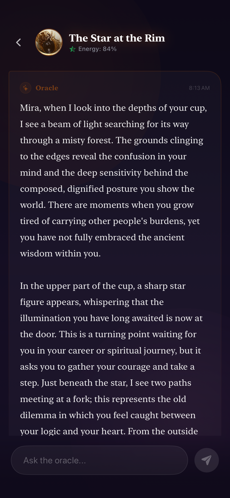
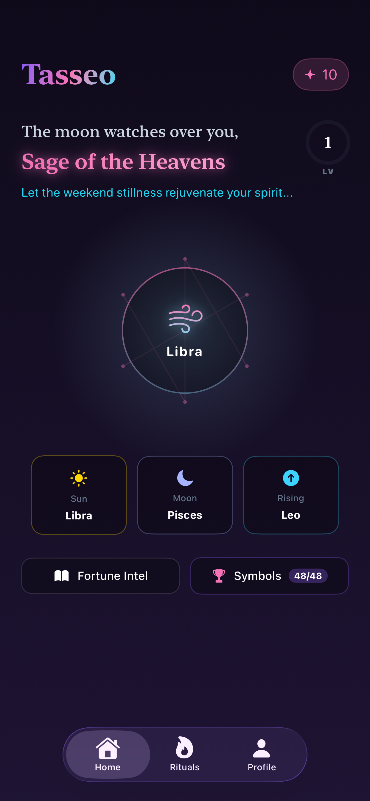
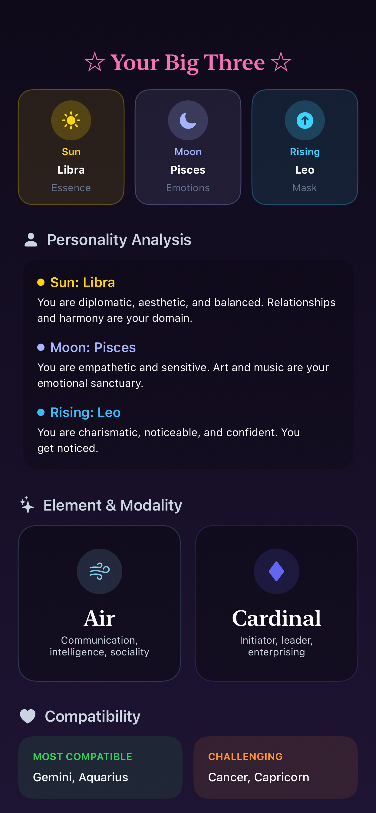
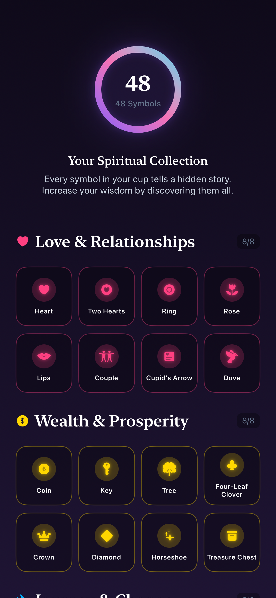
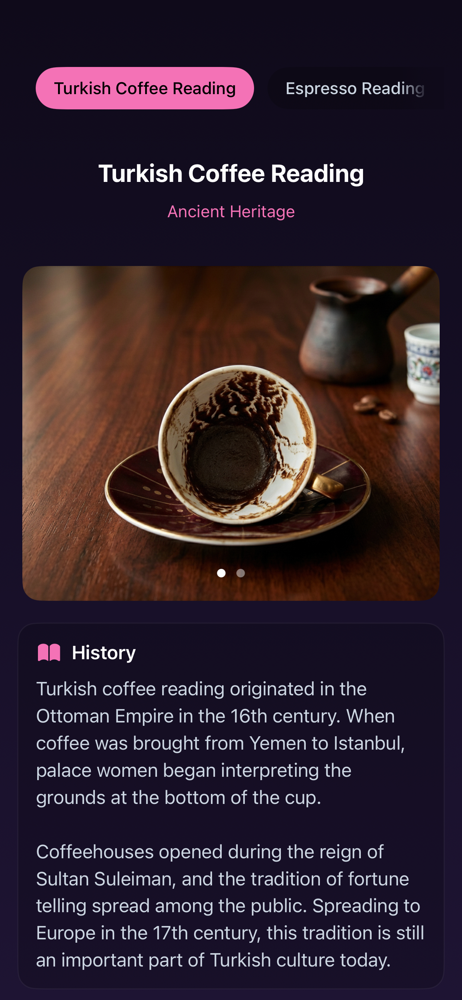
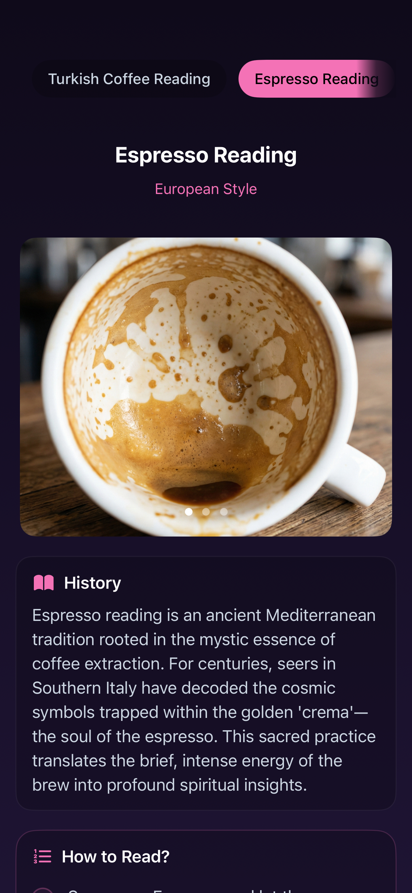
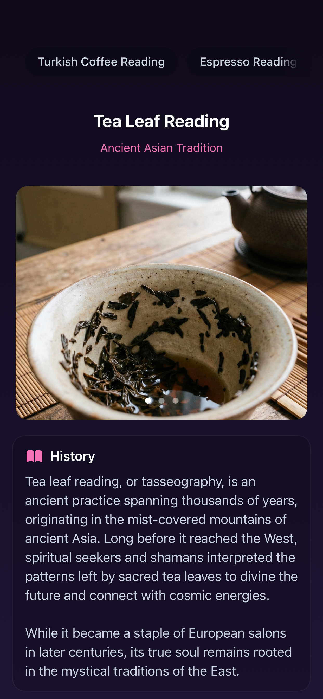
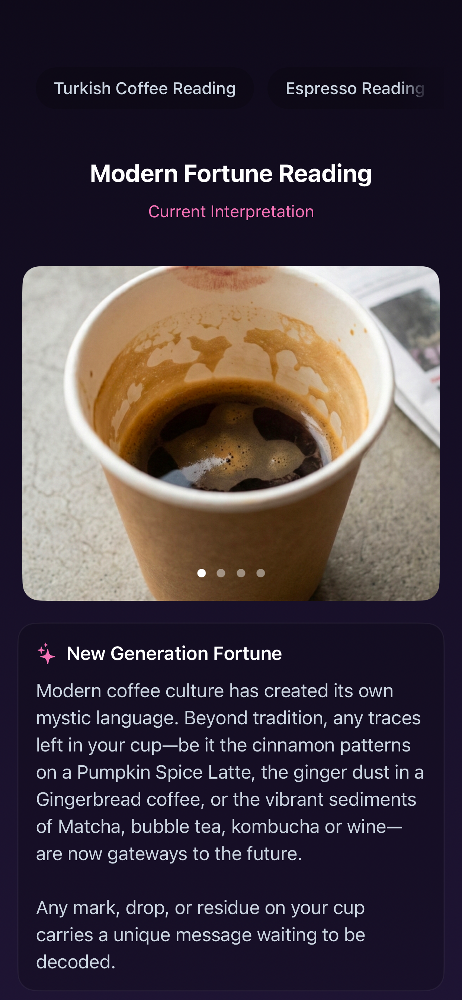

Cup Reading
Analyze Turkish coffee, tea leaves, espresso crema, latte, matcha, and modern drink patterns through symbolic cup vision.
An Oracle That Remembers Your Story
Upload your cup, discover hidden symbols, and continue every reading as a personal conversation with Tasseo. Each ritual becomes part of a living oracle memory shaped around you.



Ancient ritual, modern oracle
Tasseo blends tasseography, symbolic vision, astrology, memory, and conversational guidance so every reading feels continuous, personal, and alive.
Analyze Turkish coffee, tea leaves, espresso crema, latte, matcha, and modern drink patterns through symbolic cup vision.
Every reading opens as a chat, so users can ask follow-up questions and return to the same ritual over time.
The Oracle remembers relevant context, tone, recurring symbols, emotional patterns, worries, and past conversations.
Send coffee, tea, espresso, latte, matcha, or similar cup photos for a focused mystical interpretation.
Continue the reading as a personal chat instead of receiving a one-time generic horoscope.
Save ritual history, collect symbols, earn XP, keep streaks, and watch your profile evolve.
Spiritual collection
Detect motifs like heart, key, moon, crown, road, bird, bridge, ring, eye, and candle. Each discovery becomes part of your symbolic history.

Progression and personalization
Profiles, credits, XP, subscriptions, themes, referrals, and privacy controls are designed as part of the same premium spiritual product.
Sun, Moon, Rising, relationship status, intent, worries, personality context, and preferred Oracle tone shape onboarding.
Choose a mystical, friendly, direct, professional, or emotionally warm voice for a reading style that fits the user.
Readings, chats, and symbol discoveries earn XP, unlock levels, and turn the experience into a visible journey.
Users can buy credit packs, earn credits through rewarded ads, restore purchases, or unlock expanded premium access.
Readings adapt to language and cultural context, with dark mystical, coffee-inspired, and atmospheric app themes.
Users can clear remembered context and ritual history while keeping credits, XP, streaks, and purchases intact.
How the ritual works
Show the range of readings directly: Turkish coffee, espresso crema, tea leaves, and modern drink patterns each carry their own visual language.



